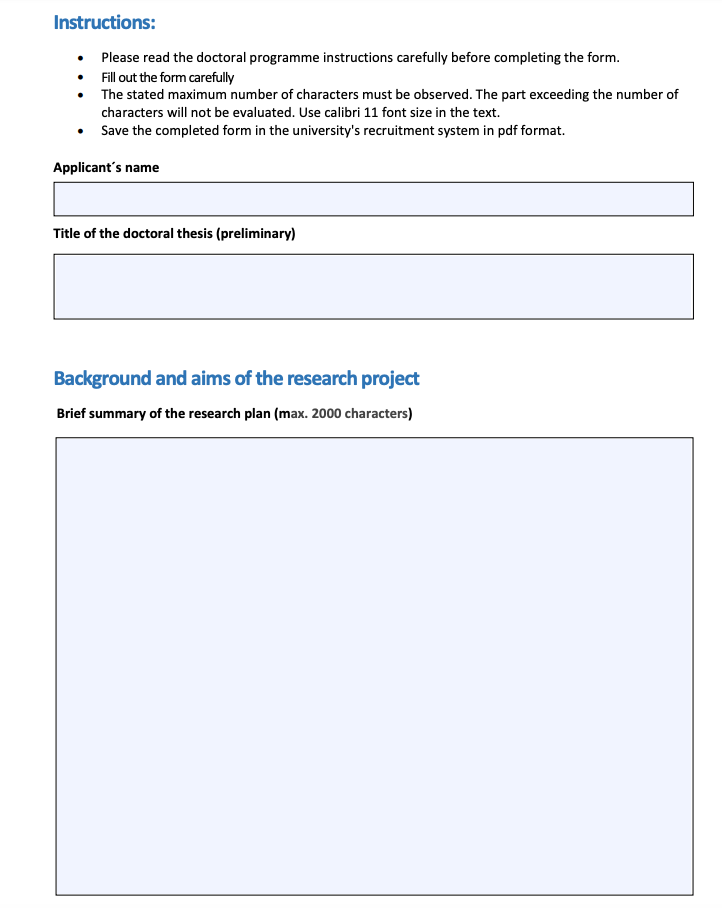

Once a year, the doctoral programmes of the University of Helsinki open a call for applications for university-funded doctoral candidate positions. The doctoral candidates selected for these positions complete their doctoral research employed by the university. Both current University of Helsinki doctoral candidates and new applicants planning on doctoral studies are eligible to apply for these positions.
I was lucky enough to get one of these positions in the Doctoral Programme in Political, Societal, and Regional Changes (henceforth: PSRC) at the University of Helsinki in 2020. Since many PhD candidates are looking for funding for their current and/or future PhD research, I decided to share my own experiences of applying (successfully) to a salaried doctoral researcher at the University of Helsinki.
This post includes my points on:
I’ll speak first shortly about the application form and give some general tips about the style of the application text. Then, I’ll go through very shortly the most relevant parts (to me) of the research plan section by section, and I’ll also give some examples from my research plan.
The first thing that might confuse applying for these positions is the application form. You can find the form and general instructions on how to apply for the position on the doctoral programme’s website. After opening the general instructions site, navigate to the section “Application form” and click on “Research plan”. After that, a site with the following views opens:

Before moving on, I must note that the application system has changed slightly since I applied: I got the position in 2020, and then the application system was called “Aava” and the new one seems to be “Ulappa”. However, at least the research plan sections seem to be the same or very similar to the previous application form.
As you may see, there is very limited space for writing different sections in the application form. Also, the character limitations may seem illogical at many points: for example, the motivation section for conducting doctoral research is as long as the research summary, rationale for the research project, and objectives of your research. Why so? I guess that since the application form is similar to all doctoral programmes at the University of Helsinki (whether you’re a social scientist, humanist, natural scientist, or medical student), the university does not want to change the application format too often. Moreover, this application form may fit better and/or be more typical to some branches of science than to others.
Since the application form is so short and some sections seem a bit repetitive – i.e. it almost seems that you’re asked to write the same things twice – my strategy in writing this application was to repeat as little as possible the same ideas between the sections. I know, sometimes it’s necessary to repeat the same ideas briefly, but if you have to do, my advice is to try to do it as shortly as possible. This way you have maximum space to represent your ideas.
The second piece of advice related to writing the research plan is the style. My supervisors advised me to write the text as simply as possible; you’re likely a better specialist in your area than most of the evaluators reading your text. This is especially true in multidisciplinary doctoral programmes, where there is a wide range of disciplines. For example, my doctoral programme (PSRC) consists of the following branches of science: area and cultural studies, consumer economics, global development studies, economic and social history, human geography, political history, and political science. Thus, you can’t expect that evaluators from, say, Nordic studies are familiar with quantitative political science, and the other way around. Therefore, try to write your research plan in a way that is easily understandable also for a non-specialist in your research area. You may clarify details later in the interview situation, in case you’re shortlisted.
Another general point worth mentioning related to multidisciplinary doctoral programmes is that while your research plan should be as easily understandable as possible, it should be also as universally interesting as possible (I know, is not so easy to formulate your research plan like that!). For example, since my research idea was to study how political participation relates to authoritarianism in Russia and/or the post-Soviet sphere, I tried to emphasize – at least between the lines – how the research on the rise of authoritarian politics is not relevant and interesting only to Russian and Eurasian studies, but to other disciplines as well (e.g. to political science, development studies, political history, and so on). I also thought a lot about how to argue why Russia/post-Soviet countries are exactly relevant case studies.
The final general point and advice that I got from supervisors were to be bold when writing the plan. At this stage, you don’t have to have ready research results, and it’s okay to make some assumptions about the outcomes of your research and how your research will contribute to and complete the existing research on the topic.
Here, my rationale was that Russia is a good case study because 1) it represents a modern autocracy, 2) there is a lot of good quality data for my research, and 3) the overall economic and human development (e.g. high education levels and socio-economic development) in Russia are at odds with the political development of the country (low levels of political participation and growing authoritarianism).
Next, I’ll go shortly through the most relevant fields of the application form. I also comment on these fields shortly and share my insights on which things to consider in different sections and will give some example passages from my application.
Since this is the first section of your research plan, I was advised to start this section with attention-catching sentences. The logic behind this is that the evaluators have to read many applications, and by starting your text with striking sentences you’re more likely to get the attention of the reader. I started my section with two questions like this:
“What makes people take political action in modern autocracies, where especially anti-government activity is often risky? Could the fluctuations in political participation explain why we have witnessed autocratization in many post-Soviet countries after the collapse of the USSR and more recently?”
Then, I proceeded by stating why we should care about these questions:
“These are timely questions because political participation not only offers citizens means to communicate their views to the establishment and challenge the political elite, but it also legitimizes the power of both autocratic and democratic regimes.”
After that, I sought to pinpoint the knowledge gap that we have in existing research on the topic.
To me, it seemed a bit strange that this section was as long as some more substantial sections of the application form, like the rationale for the research and objectives of the research. However, since the character limit for this section is pretty generous, my strategy here was to underline that I have already relevant working and research experience on the topic, and also many relevant skills needed to conduct my research. Also, I tried to pinpoint why exactly this doctoral programme would be a good fit for my PhD research.
In this section, my strategy was to state as clearly as possible why my topic is relevant not only to Russian and Eurasian studies, but also universally speaking. Here, I think the following passage contained the most relevant point of the rationale for the research project section: “Studying political participation and regime dynamics in Russia is relevant because Russia represents a modern autocracy where the overall economic and human development (e.g. high education levels, socio- economic development) are at odds with the political development (low levels of political participation and growing autocratization). Moreover, existing research indicates that the life values of the Russian population have become increasingly individualistic over time (Magun and Rudnev, 2010). This non-connection between economic, human and value development and political development in Russia is puzzling, and contradicts many democratization and modernization theories (Bunce, 2000; Fish and Wittenberg, 2009; Inglehart, 1997). Hence, the relationship between political participation and autocracy requires a more detailed investigation and is the main rationale for my research project.”
To me, this section seemed somewhat repetitive with the “rationale for the research project” and “Brief summary of the research plan” sections. Hence, I tried to formulate more specific sub-questions of my research in this section. Besides this, I again tried to underline the general importance and relevance of my research:
“The topic of my research is timely because modern autocratic systems share many political features. Thus, my models and hypotheses could be applied to analyze autocratic regimes beyond my set of countries too.”
I also think that in this section you may write about your assumptions and hypotheses. It’s also worth mentioning that they can be pretty bold at this point since you’re only about to start your PhD research.
Again, this section seems quite spacious considering the character limit. Thus, my advice is to use this space by describing why exactly your data and methods are suitable to your research. Likewise, I think it’s important to communicate here the pros and cons of your data and methods because this gives an impression that you have already thought about these things (you may think of this as kind of like a risk assessment of your research). After communicating the possible limitations of your data and methods, try to describe briefly how you plan to overcome these limitations.
In this section, the most important thing is to show that you have thought about these issues. I think it’s also important here if you could give some examples of how your data could be used in future research by other researchers, for example, can your data be stored in open-access format, how others can reproduce your research, and so on.
Here, the most important issue again is to demonstrate to the readers that you’ve thought about these things. Nobody expects an early-stage or soon-to-be PhD researcher to be an expert on research ethics, but rather you must pinpoint some possible ethical issues related to your research. Also, if your research has some “ethical advantages” – like your intended research data is already anonymized and open-access by nature – you should list them here.
As a disclaimer, I should mention that the ideas presented here were my thoughts and strategies when applying for the salaried PhD researcher position at the University of Helsinki. Hence, some advice may work better for you and in applying to certain doctoral programmes, and some not.
I hope you find these tips interesting and relevant to you. The relevant parts of my research application can be downloaded by clicking the “PDF”-button under the main title of this blog post.
Finally, in case you’re not shortlisted for the job interview or hired for this position, it doesn’t necessarily mean that your research plan is bad, or you did something “wrong”. As with many grants, there is a lot of competition for these positions, and sheer luck and randomness also play an important role in the application process (as with many things in life, for better or worse).
I wish you good luck in applying and hope to see you as my future colleague!